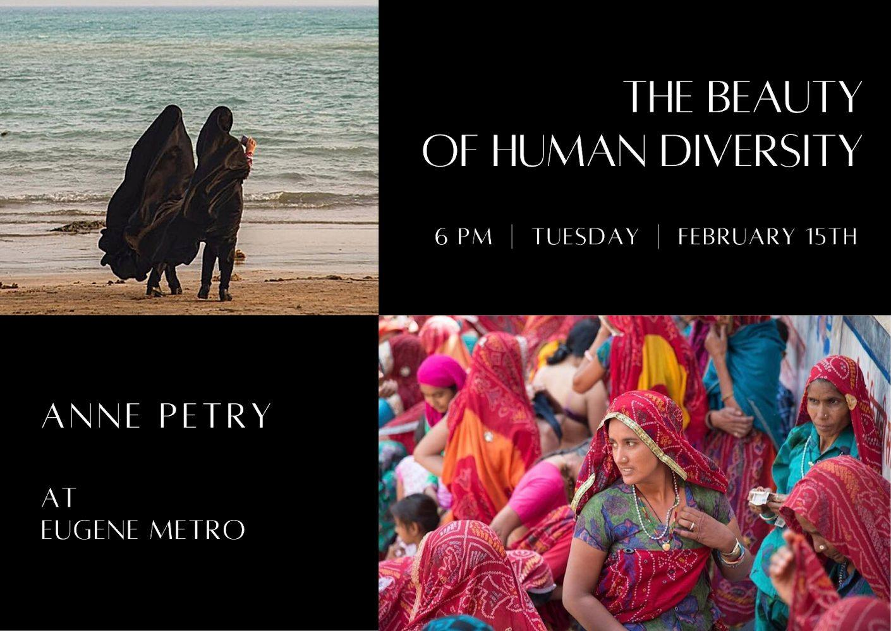
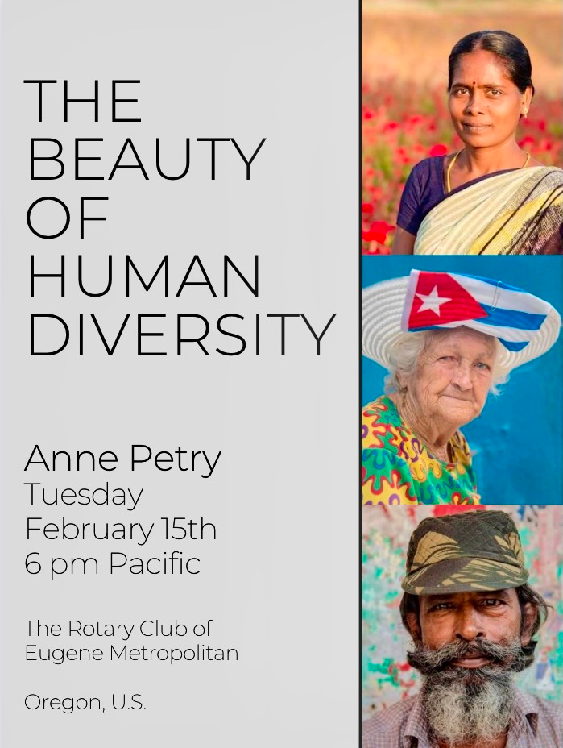
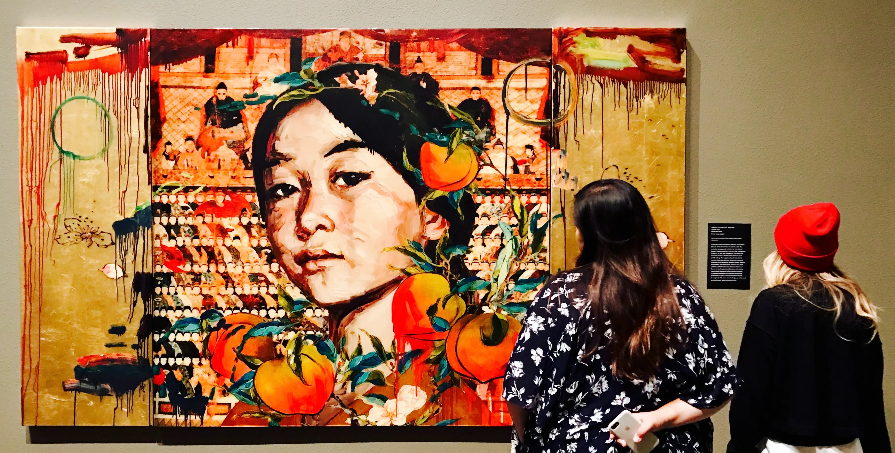
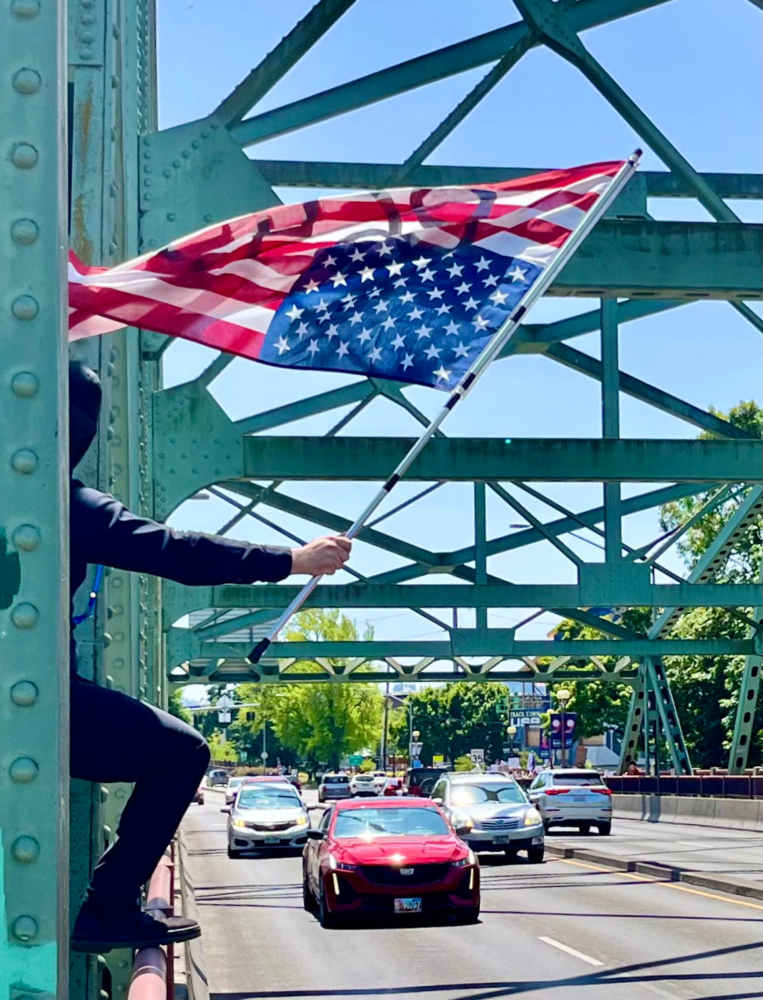
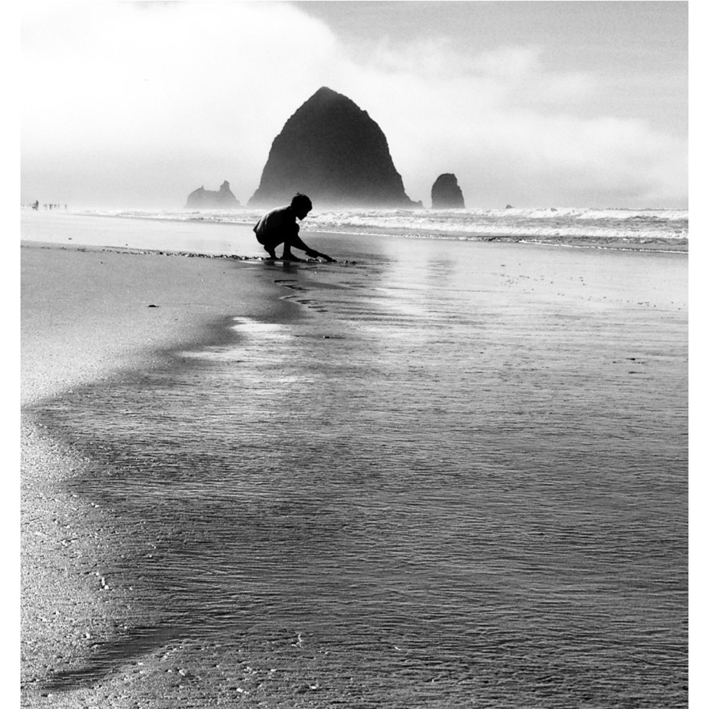

Multimedia
Multi-platform social media management, photography, photo sourcing, photo editing, graphic design, infographics, and brand management for digital storytelling
Graphic Design & Social Media




Photography




